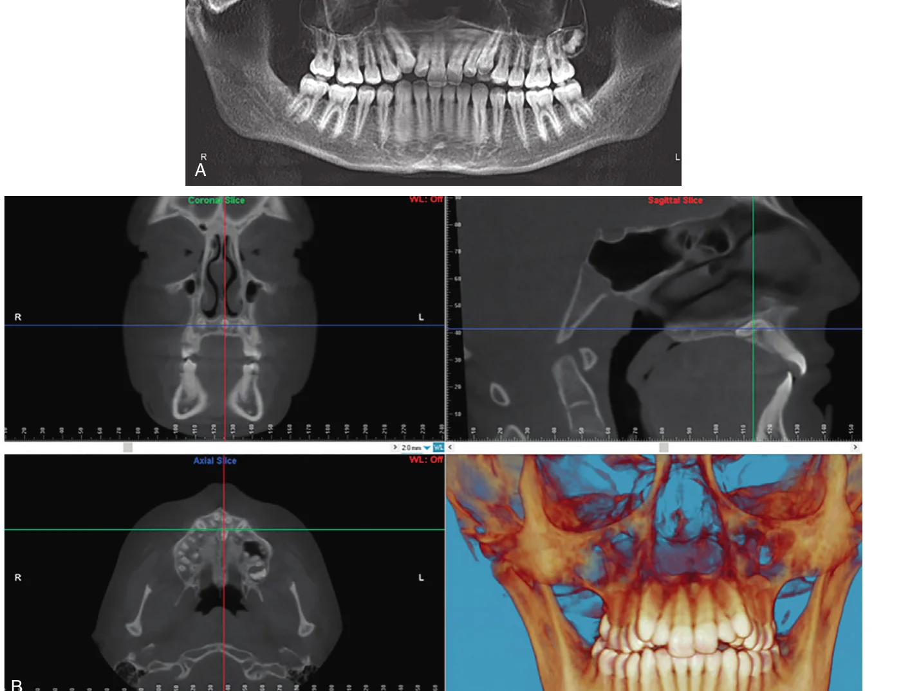

نسخه استخراجشده؛ ترجمه یا تأیید علمی انجام نشده است. وضعیت: captured
بیدندانی مادرزادی — شایعترینها:
وجه مشترک هر سه: آخرین دندان گروه خودشان هستند. همین جایگاه در انتهای سری، آسیبپذیرشان میکند.
دندان اضافه — شایعترین، مزیودنس در خط وسط بالاست که علت کلاسیک عدم رویش انسیزور مرکزی یا دیاستم است.
⚠️ بیدندانی شدید (اولیگودنشیا، شش دندان یا بیشتر) اغلب با سندرمهایی مانند دیسپلازی اکتودرمال همراه است. چون دندانها منشأ اکتودرمی دارند، در این بیماران دربارهی مو، ناخن و تعریق هم بپرس — و در صورت لزوم به ژنتیک ارجاع بده.
بیدندانی را فقط رادیوگرافی نشان میدهد؛ در پانورامیک هر کودک جوانهها را بشمار. اگر پرمولر دوم پایین نیست، مولر دوم شیری میتواند سالها بماند، ولی باید از نظر آنکیلوز و پایین ماندن پایش شود (مولر شیری آنکیلوزهای که جانشین دارد، معمولاً خودش بهموقع میافتد). در بیدندانی لترال بالا دو مسیر اصلی داری: جایگزینی کانین بهجای لترال، یا حفظ فضا برای ایمپلنت پس از پایان رشد یا پروتز.

نکتهی بالینی: هر تغییر در اندازهی دندان مستقیماً بر آنالیز بولتون و طرح فضا اثر میگذارد.
و یک قاعدهی عملی که وقت زیادی صرفهجویی میکند: وقتی لترال میخیشکل یا غایب دیدی، سمت مقابل را با کولیس اندازه بگیر — نه با چشم. میکرودنشیای خفیف بهراحتی از نظر پنهان میماند و همان چند میلیمتر، در فینیشینگ خودش را نشان میدهد. در لترال کوچک یا میخیشکل، فضا را کنترلشده در دو طرفش پخش کن تا دندانپزشک ترمیمی با کامپوزیت یا ونیر اندازهاش را جبران کند.
تفکیک Fusion از Gemination هم ساده است: دندانها را بشمار. در Fusion یکی کم است، در Gemination شمار طبیعی میماند.
| مانع | پیامد |
|---|---|
| دندان اضافه (مزیودنس) | عدم رویش انسیزور مرکزی |
| اودنتوم | انسداد مکانیکی مسیر رویش |
| آنکیلوز دندان شیری | اینفرااکلوژن و کج شدن دندانهای مجاور |
| کیست فولیکولار | جابهجایی جوانهی دندانی |
👈 قاعدهی طلایی: هر تأخیر رویش نامتقارن، یعنی رادیوگرافی — نه انتظار.
چرا تأکید بر نامتقارن؟ چون تنوع سن رویش میان افراد زیاد است ولی میان دو سمت یک نفر بسیار کم. اختلاف بیش از شش ماه با سمت مقابل، حساسترین نشانهی در دسترس توست.
و هزینهی انتظار واقعی است: مانعی که زود کشف شود اغلب با یک جراحی کوچک برطرف میشود؛ همان مانع اگر دیر کشف شود، به اکسپوز، ترکشن و ماهها درمان نیاز پیدا میکند.